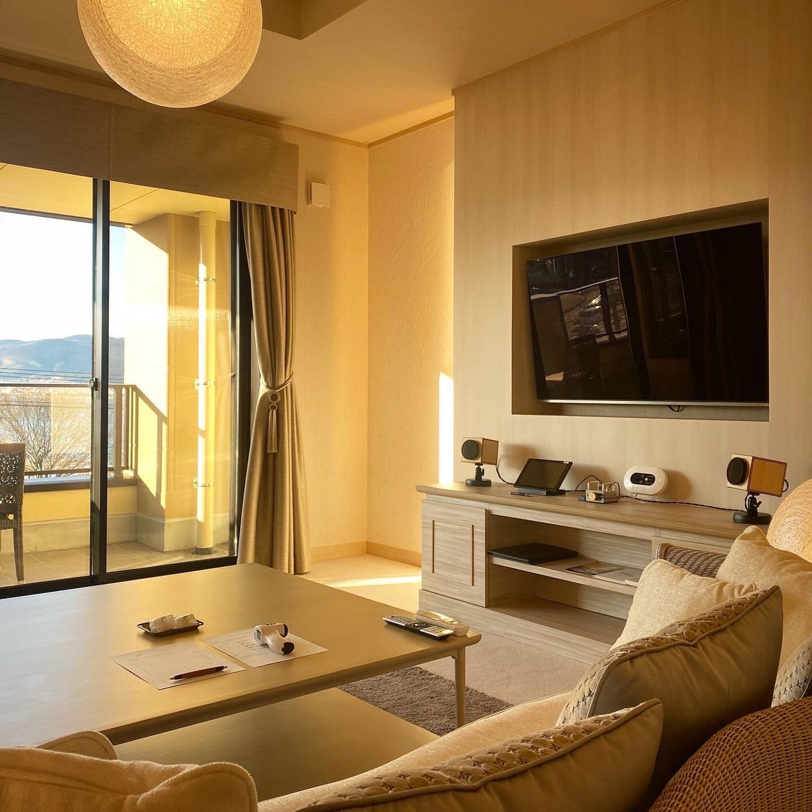
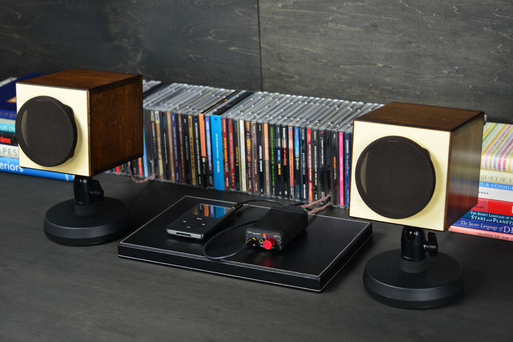
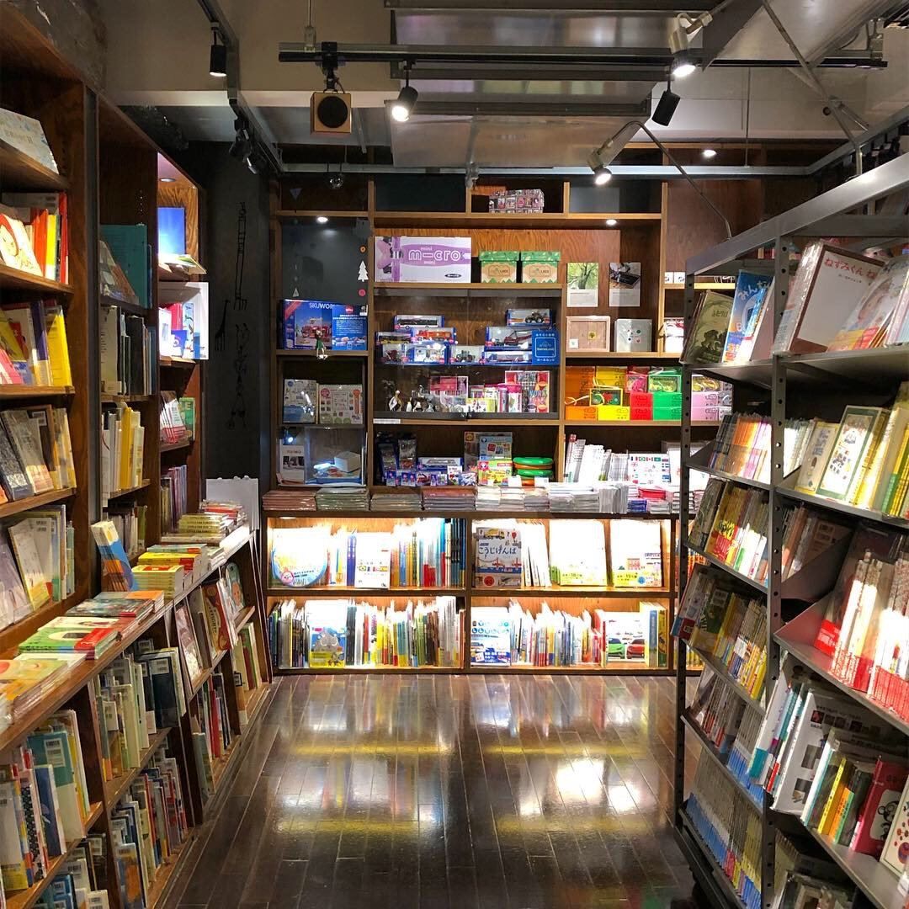
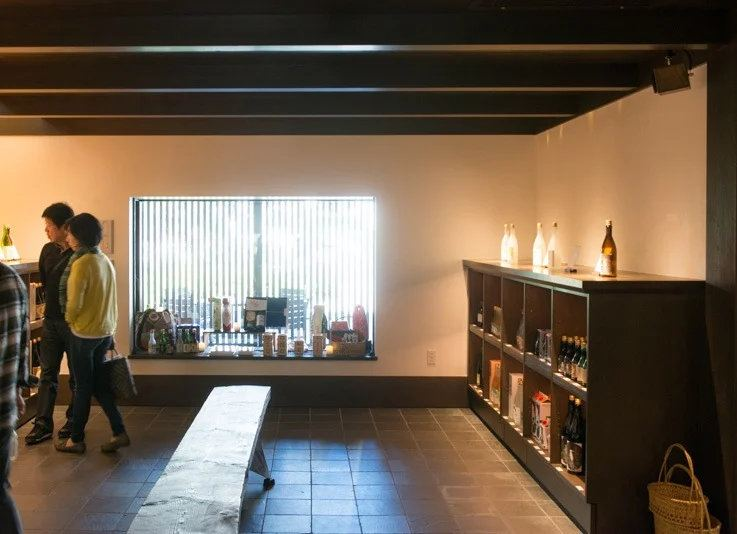
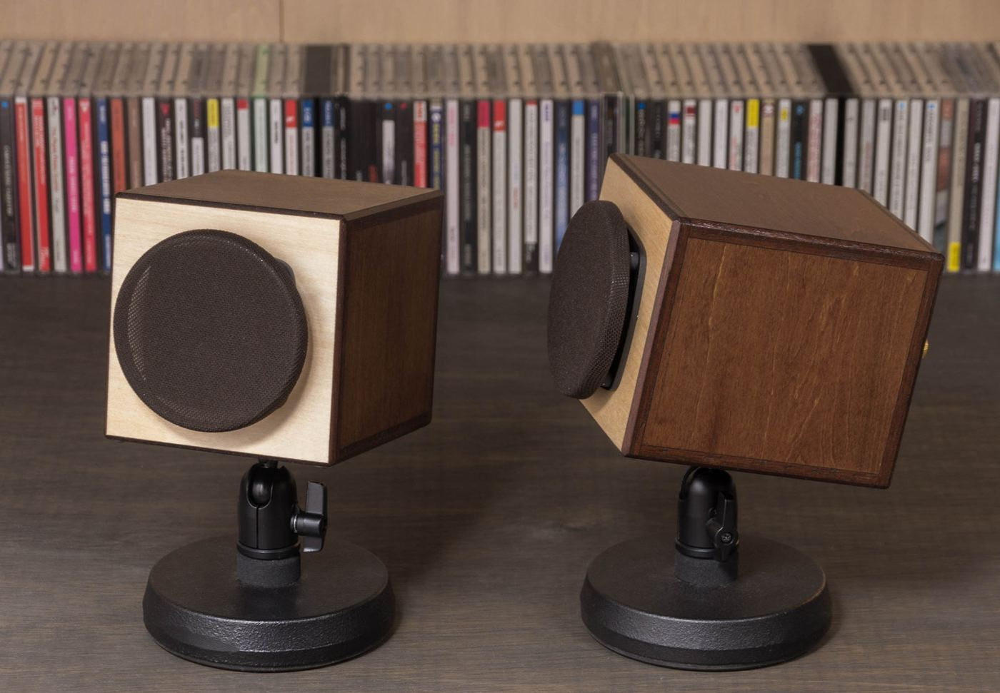
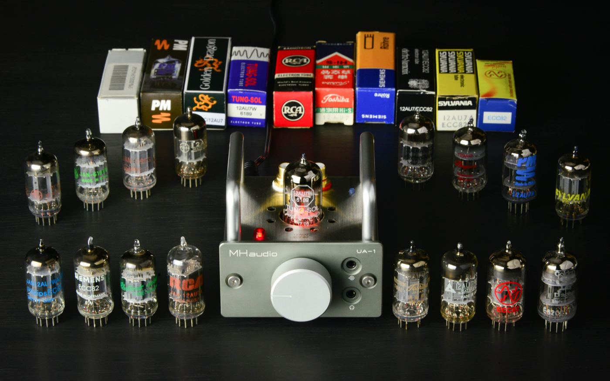
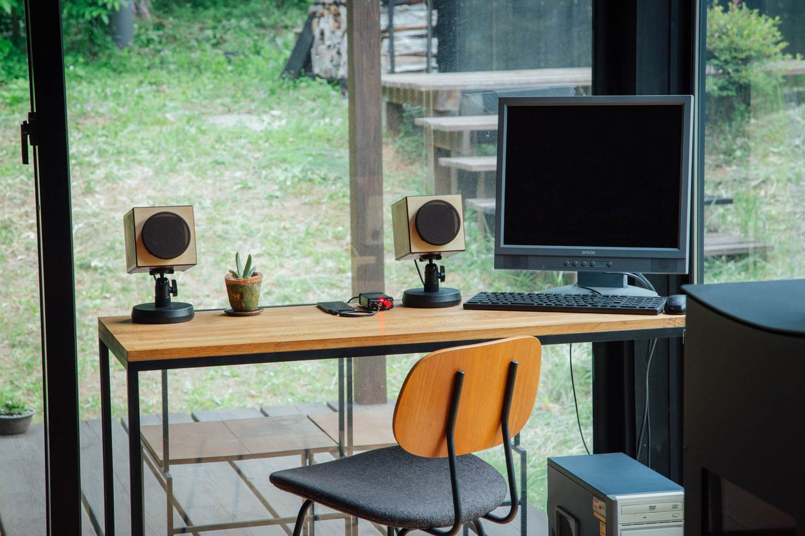

HOTEL ・ ホテル
かたくらシルクホテル様
長野県諏訪市皇室ゆかりの「諏訪湖ホテル」が2021年に生まれ変わったホテル。計画の段階からお声がけいただき、全室にWAONのオーディオセットを入れました。部屋ごとのインテリアに合わせて、スピーカーの色とアンプを選んでいます。
- 導入
- 全9室
- 製品
- WAON ／ UA-1 ／ DA-1

客室に、ひとつの本物の音。
世界最小の本格オーディオ ― 小さな音でも、部屋のどこでも澄んで聴こえる。
どちらでお使いになりますか
Two ways in
客室、売り場、カフェ、酒蔵、放送局。会話の邪魔をせず、空間をそっと満たす音を。設置の方法からご相談いただけます。
導入事例を見る
CDジャケットほどのスピーカーと、手のひらのアンプ。机の上で、いつもの音楽が見違えるように鳴ります。
製品を見る選ばれる理由
大きく、重く、複雑なオーディオは良い音がする――本当でしょうか。MH audio は、音のことだけを考えて、小さくシンプルなスピーカーとアンプをつくっています。
クリアで浸透性のある音なので、広い場所でも音量を上げずに届きます。六本木蔦屋書店様は、1階の売り場をWAON 6本で。
小さな音でもちゃんと聴こえ、お客様の会話のじゃまをしない。酒蔵の売り場やカフェで選ばれている理由です。
柔らかく立体的な響き。仕事をしながら、くつろぎながら、流しっぱなしにしていても耳が疲れにくい音を目指しています。
スピーカーはCDジャケットほど、アンプは手のひらほど。底に三脚用のネジがあり、天井からの吊り下げや壁への設置もできます。

小さな音量でも、部屋のどこでも― かたくらシルクホテル様の事例より
澄んだ空気のように聴こえる音。
お客様の事例
ホテル、書店、酒蔵、放送局、飲食店。16の場所で、MH audio が毎日鳴っています。内装に合わせて色やアンプを選び、目立たず、でも隠さずに設置します。
皇室ゆかりの「諏訪湖ホテル」が2021年に生まれ変わったホテル。計画の段階からお声がけいただき、全室にWAONのオーディオセットを入れました。部屋ごとのインテリアに合わせて、スピーカーの色とアンプを選んでいます。

1階の売り場とカフェのBGMを、天井から吊るしたWAON 6本でまかなっています。2020年の改装で内装が黒に変わった際は、5年使ったWAONを引き取って点検し、黒に塗り直しました。

大きな梁と漆喰の壁の蔵元ショップ。2012年の全面改装で店内の音響を担当しました。130㎡余りをWAON 4本で。WAONは内装と同じ塗料で特別に仕上げ、梁の上や天井の隅にさりげなく据えています。
そのほかの導入先
評価・実績
賞をいただき、雑誌に取り上げられ、音楽家にも使っていただいています。銀座・代官山・二子玉川のお店で、実際に音を聴いていただけます。
オーディオ銘機賞
2014
ヘッドホンアンプ HA-11
指揮者
小林研一郎様

『Mac Fan』の特集「超快適デスクの作り方」では、デスクの音として紹介されました。『ステレオ時代』『Pen＋』『レコード芸術』にも掲載されています。
製品
スピーカーとアンプ。音楽を聴く手段がレコードからスマホに変わっても、音を決めるのはこの2つです。だからMH audio は、この2つだけを作り続けています。

CDジャケットほどの木の箱。柿渋を10回以上塗り重ねた質感で、和室にも英国の家具にもなじみます。
詳しく見る
ウォールナットの天然木を貼った wn と、竹を使った引き締まった音の take。お部屋に合わせて選べます。
詳しく見る
陶器でできた、手のひらに乗るスピーカー。楽器や声の一つひとつを細かく描き出します。
詳しく見る
真空管アンプの造りを小さな体に凝縮。本物の真空管の音を、手軽に楽しめます。
詳しく見る
手のひらに収まる大きさで、WAON・KIONをしっかり鳴らします。ホテルの客室にも。
詳しく見る
HA-11 はオーディオ銘機賞2014を受賞。HA-1 は持ち歩けるアナログのヘッドホンアンプです。
詳しく見るひとつずつ手作りのため、価格・納期はメールでご案内しています。
読みもの
お店の音づくり、デスクの音、真空管のこと。選ぶ前に知っておきたいことを、作り手の言葉でまとめています。
作り手・工房



原点は、好きな音楽をただ気持ちよく聴きたいという想いでした。今までのオーディオがいかに無駄が多く、それが音を悪くしているかに気づいたとき、音のことだけを考えた小さなスピーカーとアンプをつくろうと決めました。
長野県富士見町の工房で、精密や家具の専門家の力を借りながら、ひとつずつ手で仕上げています。手作りのため、一台ずつ表情が少しずつ違います。
HoshinoMH audio 代表 星野
取扱店・ふるさと納税
手作りのため、限られたお店でだけ展示しています。実際の音を確かめてから、ご相談ください。
試聴と販売
1号館2階 音楽フロアで WAON・UA-1 を試聴
1階 music コーナーで試聴
MH audio の製品は、長野県の2つの町と市で返礼品に選ばれています。

まずは、ご相談ください。
ホテルの客室、お店の売り場、ご自宅の机。どこで、どんなふうに鳴らしたいかをメールでお聞かせください。お部屋の広さや内装に合わせて、スピーカーの色とアンプの組み合わせをご提案します。
使う場所・広さ・気になる製品をお書きください
価格・納期・お支払い方法をメールでご案内します
ひとつずつ手作りで仕上げてお届けします
お店・ホテル・事務所でのご導入も、ご自宅用もこちらから